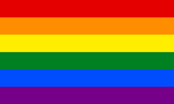
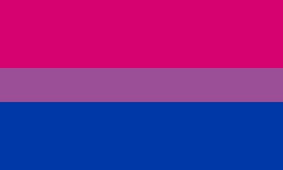

SOGIE
meaning sexual orientation and gender identity expression, refers to characteristics common to all human beings, as these facets are integral to our identities and lives as individuals. Although commonly associated with LGBTQ+, everybody, even cisgender heterosexuals, has a SOGIE. The LGBTQ+ spectrum, on the other hand, falls under SOGIE. Individuals under this umbrella identify themselves as lesbian, gay, bisexual, transgender, and questioning, among many other genders and sexualities. Those in the spectrum can also be referred to as "queer"..jpg)

History
Lesbianism was the first in the acronym which gained its name, dating back to ancient Greek works and a more modern use which then emerged in the 1890s. Homosexuality and bisexuality were then terms coined by a journalist in 1869, and gay was then used widely in the late 1960s, as activitists reclaimed this decade-old slur. As the acronym LGB was being more commonly used and popularized, the term transgender came into being in 1965. This then formed the acronym LGBT, which became widespread by the 2000s.
Other variations of the acronym include LGBTQ/+, LGBTQIA.+, and even LGBTQQIP2SAA, among many others. These acronyms get expanded further for inclusivity. However, for this website, this community or spectrum will be referred to as LGBTQ+.
Identities
Lesbian
refers to women or unaligned/feminine aligned nonbinaries who are physically, sexually, and/or emotionally attracted to other women or unaligned/feminine aligned nonbinaries

Gay
a term used to refer to describe everyone under the queer spectrum, yet in the acronym, is used to refer to a man or unaligned/masculine aligned nonbinaries who are attracted to other men or unaligned/masculine aligned nonbinaries
Bisexual
refers to people who experience physical, sexual, and/or emotional attraction to any and all genders
Transgender
an umbrella term describing individuals who possess or express different gender identities, not just binary ones, than their assigned gender at birth
Questioning
a term used to describe individuals who are exploring and experimenting with their sexual or romantic orientation and gender identity expression

Intersex
refers to a person who was born with both male and female biological characteristics and traits, either through chromosomes, genitals, etc.
Asexual
refers to people who experience little to no sexual attraction towards individuals of any gender
Pansexual
refers to people who experience physical, sexual, and/or emotional attraction to anyone, regardless of their gender; may also be referred to as gender-blind, since gender and sex aren’t factors in their attraction
Non-binary
an umbrella term referring to people who define their gender identity outside of the male and female gender binary
Genderfluid
an umbrella term referring to people who denote themselves as not having a fixed gender
Icons
Marsha P. Johnson
A black, queer, and trans liberation activist, drag performer, and sex worker who spent her whole life fighting for her and the LGBTQ community’s rights and founded STAR, Street Tranvestite Action Revolutionaries

Sylvia Rivera
A queer Latina activist and self-proclaimed drag queen who fought for the rights of transgender and gender non-conforming people and founded STAR alongside fellow activist Marsha P. Johnson

Simon Nkoli
A black anti-apartheid, gay rights, and HIV/AIDS activist who fought for freedom and social justice in South Africa and founded GLOW, the Gay and Lesbian Organisation of the Witwatersrand, who organized the first pride march in Johannesburg

Ifti Nasim
A gay Pakistani poet who wrote the first book to appear in Urdu that openly expressed homosexuality and founded SANGAT, an organization supporting the South Asian LGBTQ community